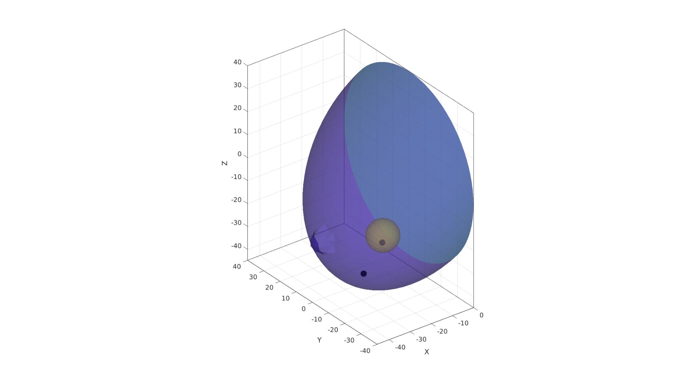
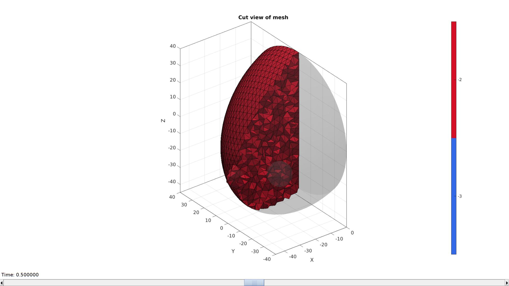
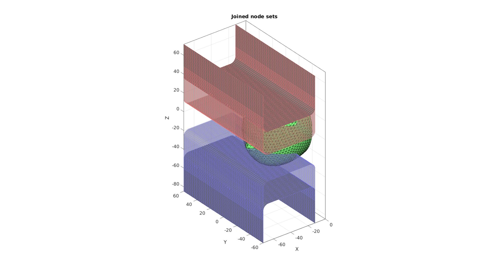
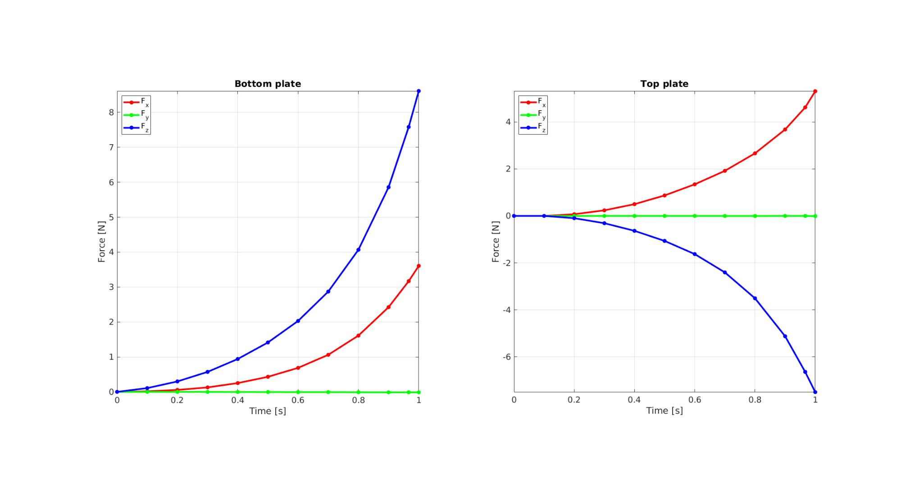
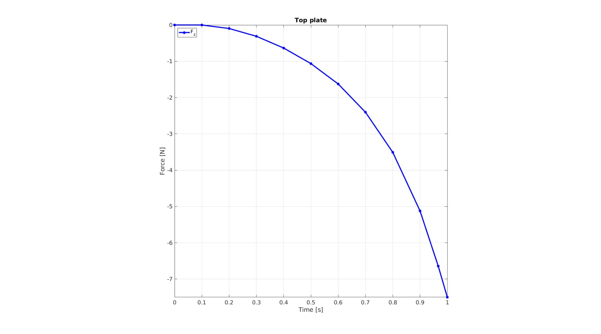

DEMO_febio_0044_mammography_01.m
Below is a demonstration for:
- Building geometry for a slab with hexahedral elements, and a triangulated sphere.
- Defining the boundary conditions
- Coding the febio structure
- Running the model
- Importing and visualizing the displacement results
Contents
- Keywords
- Plot settings
- Control parameters
- Create hemi-sphere
- Change shape of hemi-sphere to create basic breast model
- Rotate model
- Get interior points
- Visualizing mesh using meshView, see also anim8
- Split element sets
- Building plate models
- Joining node sets
- Define contact surfaces
- Define boundary conditions
- Defining the FEBio input structure
- Quick viewing of the FEBio input file structure
- Exporting the FEBio input file
- Running the FEBio analysis
- Import FEBio results
- Import rigid body reaction forces
Keywords
- febio_spec version 4.0
- febio, FEBio
- indentation
- contact, sliding, sticky, friction
- rigid body constraints
- tetrahedral elements, tet4
- triangular elements, tri3
- static, solid
- hyperelastic, Ogden
- displacement logfile
- stress logfile
clear; close all; clc;
Plot settings
fontSize=15; faceAlpha1=0.8; faceAlpha2=0.3; markerSize1=40; markerSize2=25; lineWidth=3;
Control parameters
% Path names defaultFolder = fileparts(fileparts(mfilename('fullpath'))); savePath=fullfile(defaultFolder,'data','temp'); % Defining file names febioFebFileNamePart='tempModel'; febioFebFileName=fullfile(savePath,[febioFebFileNamePart,'.feb']); %FEB file name febioLogFileName=[febioFebFileNamePart,'.txt']; %FEBio log file name febioLogFileName_disp=[febioFebFileNamePart,'_disp_out.txt']; %Log file name for exporting displacement febioLogFileName_force=[febioFebFileNamePart,'_force_out.txt']; %Log file name for exporting force %Breast geometry r_breastNominal=40; %Breast radius sy=1; %Y-direction radial scaling to force deviation from hemi-sphere r1=r_breastNominal/2.5; %Radius alveola r2=r_breastNominal/7; %Radius nipple rm=mean([r1 r2]); %radius between outer alveola radius and outer nipple radius w=(r1-r2)/20; %Height of alveola h=r2; %Height of alveola gravityShiftPercentage=0.5; %Percentage shift due to gravity dx=r_breastNominal.*gravityShiftPercentage; %X-shift due to gravity %Loading quasiCompressionLevel=0.3; %Sets displacement as function of nominal breast radius loadAngle=(0/180)*pi; distanceChestPlate=12; %r_breastNominal/7 %Meshing parameters nRefine=3; %Number of refine steps for hemi-sphere volumeFactor=3; plateHeight=r_breastNominal; %Material parameter set k_factor=50; %Bulk modulus factor c1_1=1e-3; %Shear-modulus-like parameter m1_1=2; %Material parameter setting degree of non-linearity k_1=c1_1*k_factor; %Bulk modulus c1_2=c1_1*5; %Shear-modulus-like parameter m1_2=m1_1; %Material parameter setting degree of non-linearity k_2=c1_2*k_factor; %Bulk modulus % FEA control settings numTimeSteps=10; %Number of time steps desired max_refs=50; %Max reforms max_ups=0; %Set to zero to use full-Newton iterations opt_iter=15; %Optimum number of iterations max_retries=5; %Maximum number of retires dtmin=(1/numTimeSteps)/100; %Minimum time step size dtmax=1/numTimeSteps; %Maximum time step size symmetric_stiffness=0; min_residual=1e-18; %Set run mode runMode='external'; %'internal' %Contact parameters contactPenalty=15; laugon=0; minaug=1; maxaug=10; fric_coeff=0.1;
Create hemi-sphere
[F,V,C_hemiSphereLabel]=hemiSphereMesh(nRefine,r_breastNominal,1); %Construct hemi-shere mesh
Change shape of hemi-sphere to create basic breast model
%scale Y direction to deviate from hemi-sphere. V(:,2)=V(:,2)*sy; indExclude=unique(F(C_hemiSphereLabel==2,:)); logicExclude=false(size(V,1),1); logicExclude(indExclude)=1; dt=sqrt(sum(V(:,[1 2]).^2,2)); logicHigh1=dt<r1 & ~logicExclude; logicHigh2=dt<r2 & ~logicExclude; C_skin=double(logicHigh1); C_skin(logicHigh2)=2; t=linspace(0,2*pi,500); x=rm*sin(t); y=rm*cos(t); vc=[x(:) y(:)]; [d]=minDist(V(C_skin==1,[1 2]),vc); dtt=d.^3; dtt=dtt-min(dtt); dtt=dtt./max(dtt); dtt=abs(dtt-1)*w; V(C_skin==1,3)=V(C_skin==1,3)+dtt; f=V(:,3); %Z-coordinates [min(Z) max(Z)] f=f-min(f(:)); %Z-coordinates [0 max(Z)-min(Z)] f=f./max(f(:)); % [0 1] %Normalized Z-coordinate parameter V(:,1)=V(:,1)+dx.*f; dtt=dt(C_skin==2).^3; dtt=dtt-min(dtt); dtt=dtt./max(dtt); dtt=abs(dtt-1)*h; V(C_skin==2,3)=V(C_skin==2,3)+dtt;
cFigure; hold on; gpatch(F,V,'w','none',1); axisGeom; camlight headlight; gdrawnow;
breastVolume=triSurfVolume(F,V)';
Rotate model
R=euler2DCM([pi -0.5*pi 0]); V=V*R;
[Fs,Vs]=geoSphere(2,r_breastNominal/6); Vs(:,1)=Vs(:,1)-r_breastNominal/2; Vs(:,2)=Vs(:,2)-r_breastNominal/4; Vs(:,3)=Vs(:,3)-r_breastNominal/2;
% cFigure; hold on; % gpatch(F,V,C_skin,'none',1); % axisGeom; % camlight headlight; % icolorbar; % gdrawnow;
C=[C_hemiSphereLabel;(max(C_hemiSphereLabel(:))+1)*ones(size(Fs,1),1)]; F=[F;Fs+size(V,1)]; V=[V;Vs];
cFigure; hold on; gpatch(F,V,C,'none',1); axisGeom; camlight headlight; icolorbar; gdrawnow;

Get interior points
[V_in1]=getInnerPoint({F,Fs},{V,Vs});
[V_in2]=getInnerPoint(Fs,Vs);
V_regions=[V_in1; V_in2];
cFigure; hold on;
gpatch(F,V,C,'none',0.5);
% gpatch(Fs,Vs,'kw','none',1);
plotV(V_regions,'k.','markerSize',50);
axisGeom;
camlight headlight;
gdrawnow;
 faceBoundaryMarker=C; [regionA]=tetVolMeanEst(F,V); %Volume for regular tets inputStruct.stringOpt='-pq1.2AaY'; inputStruct.Faces=fliplr(F); inputStruct.Nodes=V; inputStruct.holePoints=[]; inputStruct.faceBoundaryMarker=faceBoundaryMarker; %Face boundary markers inputStruct.regionPoints=V_regions; %region points inputStruct.regionA=regionA*ones(size(V_regions,1),1)*volumeFactor; inputStruct.minRegionMarker=2; %Minimum region marker % Mesh model using tetrahedral elements using tetGen [meshOutput]=runTetGen(inputStruct); %Run tetGen % Access model element and patch data Fb=meshOutput.facesBoundary; Cb=meshOutput.boundaryMarker; V=meshOutput.nodes; CE=meshOutput.elementMaterialID; E=meshOutput.elements;
%%%%%%%%%%%%%%%%%%%%%%%%%%%%%%%%%%%%%%%%%%%%% --- TETGEN Tetrahedral meshing --- 20-Apr-2023 18:08:19 %%%%%%%%%%%%%%%%%%%%%%%%%%%%%%%%%%%%%%%%%%%%% --- Writing SMESH file --- 20-Apr-2023 18:08:19 ----> Adding node field ----> Adding facet field ----> Adding holes specification ----> Adding region specification --- Done --- 20-Apr-2023 18:08:19 --- Running TetGen to mesh input boundary--- 20-Apr-2023 18:08:19 Opening /mnt/data/MATLAB/GIBBON/data/temp/temp.smesh. Delaunizing vertices... Delaunay seconds: 0.025983 Creating surface mesh ... Surface mesh seconds: 0.003053 Recovering boundaries... Boundary recovery seconds: 0.00582 Removing exterior tetrahedra ... Spreading region attributes. Exterior tets removal seconds: 0.001592 Recovering Delaunayness... Delaunay recovery seconds: 0.007475 Refining mesh... 2728 insertions, added 2696 points, 81280 tetrahedra in queue. Refinement seconds: 0.078644 Smoothing vertices... Mesh smoothing seconds: 0.129975 Improving mesh... Mesh improvement seconds: 0.00538 Writing /mnt/data/MATLAB/GIBBON/data/temp/temp.1.node. Writing /mnt/data/MATLAB/GIBBON/data/temp/temp.1.ele. Writing /mnt/data/MATLAB/GIBBON/data/temp/temp.1.face. Writing /mnt/data/MATLAB/GIBBON/data/temp/temp.1.edge. Output seconds: 0.064965 Total running seconds: 0.323075 Statistics: Input points: 2047 Input facets: 4086 Input segments: 6129 Input holes: 0 Input regions: 2 Mesh points: 5320 Mesh tetrahedra: 26755 Mesh faces: 55393 Mesh faces on exterior boundary: 3766 Mesh faces on input facets: 4086 Mesh edges on input segments: 6129 Steiner points inside domain: 3273 --- Done --- 20-Apr-2023 18:08:19 %%%%%%%%%%%%%%%%%%%%%%%%%%%%%%%%%%%%%%%%%%%%% --- Importing TetGen files --- 20-Apr-2023 18:08:19 --- Done --- 20-Apr-2023 18:08:19
Q=euler2DCM([loadAngle 0 0]); V=V*Q;
cFigure; hold on; hp=gpatch(Fb,V,Cb,'none',0.5); axisGeom; camlight headlight; icolorbar; gdrawnow;

Visualizing mesh using meshView, see also anim8
meshView(meshOutput);
Split element sets
E1=E(meshOutput.elementMaterialID==-2,:); E2=E(meshOutput.elementMaterialID==-3,:);
Building plate models
%Basic side curve of plate Vt=[0 0 0; 0 0 plateHeight; 1.5*r_breastNominal 0 plateHeight; 1.5*r_breastNominal 0 0; ]; %Fillet side curve of plate rFillet=6; %Fillet radius np=25; %Number of points used to construct each fillet edge closedLoopOption=0; %Use 1 if curve represents a closed loop but containes unique points [Vc]=filletCurve(Vt,rFillet,np,closedLoopOption); pointSpacingPlate=mean(patchEdgeLengths(Fb,V))/2; % Get point spacing from mesh %Extrude to form plate cPar.pointSpacing=pointSpacingPlate; cPar.depth=3*(r_breastNominal*sy); cPar.patchType='quad'; cPar.dir=0; cPar.closeLoopOpt=0; [Fp1,Vp1]=polyExtrude(Vc,cPar); Np1=mean(patchNormal(Fp1,Vp1),1); if Np1(3)<0 Fp1=fliplr(Fp1); end Vp1(:,3)=Vp1(:,3)-max(Vp1(:,3))+min(V(:,3)); Vp1(:,1)=Vp1(:,1)-max(Vp1(:,1))-distanceChestPlate; %Copy to create second plate Fp2=fliplr(Fp1); Vp2=Vp1; Vp2(:,3)=-Vp2(:,3); logicNodesSetLocation=V(:,1)<=-distanceChestPlate; max_z=max(V(logicNodesSetLocation,3)); Vp2(:,3)=Vp2(:,3)-min(Vp2(:,3))+max_z; plateSeparation=max_z-min(V(:,3)); cFigure; hold on; gpatch(Fb,V,'gw','k',1); gpatch(Fp1,Vp1,'kw','bw',1); %patchNormPlot(Fp1,Vp1); gpatch(Fp2,Vp2,'kw','rw',1); %patchNormPlot(Fp2,Vp2); axisGeom; camlight headlight; gdrawnow;

Joining node sets
Fp1=Fp1+size(V,1); %Fixed element indices Fp2=Fp2+size(V,1)+size(Vp1,1); %Fixed element indices V=[V;Vp1;Vp2;]; %Combined node sets V=V*Q';
plateDisplacement=(plateSeparation-(r_breastNominal.*(1-quasiCompressionLevel)))/2; loadDir=[0 0 1]*Q'; plateDisplacement_XYZ=plateDisplacement.*loadDir;
V2_plate1=V; V2_plate2=V; V2_plate1(:,3)=V2_plate1(:,3)+plateDisplacement; V2_plate2(:,3)=V2_plate2(:,3)-plateDisplacement;
Plotting joined geometry
cFigure; title('Joined node sets','FontSize',fontSize); xlabel('X','FontSize',fontSize); ylabel('Y','FontSize',fontSize); zlabel('Z','FontSize',fontSize); hold on; gpatch(Fb,V,'gw','k',1); gpatch(Fp1,V,'kw','bw',1); gpatch(Fp2,V,'kw','rw',1); gpatch(Fp1,V2_plate1,'kw','bw',0.5); gpatch(Fp2,V2_plate2,'kw','rw',0.5); axisGeom; camlight headlight; gdrawnow;
Define contact surfaces
% The rigid primary surface of the sphere F_contact_secondary1=Fp1; F_contact_secondary2=Fp2; % The deformable secondary surface of the slab logicContactSurf1=Cb==1; F_contact_primary=fliplr(Fb(logicContactSurf1,:)); % Plotting surface models cFigure; hold on; title('Contact sets and normal directions','FontSize',fontSize); gpatch(Fb,V,'kw','none',faceAlpha2); hl(1)=gpatch(F_contact_secondary1,V,'gw','k',1); patchNormPlot(F_contact_secondary1,V); hl(2)=gpatch(F_contact_secondary2,V,'rw','k',1); patchNormPlot(F_contact_secondary2,V); hl(3)=gpatch(F_contact_primary,V,'bw','k',1); patchNormPlot(F_contact_primary,V); legend(hl,{'Secondary 1','Secondary 2','Primary'}); axisGeom(gca,fontSize); camlight headlight; gdrawnow;

Define boundary conditions
%Supported nodes
logicRigid=Cb==2;
Fr=Fb(logicRigid,:);
bcSupportList=unique(Fr(:));
Visualize BC's
hf=cFigure; title('Boundary conditions model','FontSize',fontSize); xlabel('X','FontSize',fontSize); ylabel('Y','FontSize',fontSize); zlabel('Z','FontSize',fontSize); hold on; gpatch(Fb,V,'kw','none',faceAlpha2); hl2(1)=plotV(V(bcSupportList,:),'k.','MarkerSize',markerSize1); legend(hl2,{'BC support'}); axisGeom(gca,fontSize); camlight headlight; gdrawnow;
Defining the FEBio input structure
See also febioStructTemplate and febioStruct2xml and the FEBio user manual.
%Get a template with default settings [febio_spec]=febioStructTemplate; %febio_spec version febio_spec.ATTR.version='4.0'; %Module section febio_spec.Module.ATTR.type='solid'; %Control section febio_spec.Control.analysis='STATIC'; febio_spec.Control.time_steps=numTimeSteps; febio_spec.Control.step_size=1/numTimeSteps; febio_spec.Control.solver.max_refs=max_refs; febio_spec.Control.solver.qn_method.max_ups=max_ups; febio_spec.Control.solver.symmetric_stiffness=symmetric_stiffness; febio_spec.Control.time_stepper.dtmin=dtmin; febio_spec.Control.time_stepper.dtmax=dtmax; febio_spec.Control.time_stepper.max_retries=max_retries; febio_spec.Control.time_stepper.opt_iter=opt_iter; %Material section materialName1='Material1'; febio_spec.Material.material{1}.ATTR.name=materialName1; febio_spec.Material.material{1}.ATTR.type='Ogden'; febio_spec.Material.material{1}.ATTR.id=1; febio_spec.Material.material{1}.c1=c1_1; febio_spec.Material.material{1}.m1=m1_1; febio_spec.Material.material{1}.c2=c1_1; febio_spec.Material.material{1}.m2=-m1_1; febio_spec.Material.material{1}.k=k_1; materialName2='Material2'; febio_spec.Material.material{2}.ATTR.name=materialName2; febio_spec.Material.material{2}.ATTR.type='Ogden'; febio_spec.Material.material{2}.ATTR.id=2; febio_spec.Material.material{2}.c1=c1_2; febio_spec.Material.material{2}.m1=m1_2; febio_spec.Material.material{2}.c2=c1_2; febio_spec.Material.material{2}.m2=-m1_2; febio_spec.Material.material{2}.k=k_2; materialName3='Material3'; febio_spec.Material.material{3}.ATTR.name=materialName3; febio_spec.Material.material{3}.ATTR.type='rigid body'; febio_spec.Material.material{3}.ATTR.id=3; febio_spec.Material.material{3}.density=1; febio_spec.Material.material{3}.center_of_mass=mean(Vp1,1); materialName4='Material4'; febio_spec.Material.material{4}.ATTR.name=materialName4; febio_spec.Material.material{4}.ATTR.type='rigid body'; febio_spec.Material.material{4}.ATTR.id=4; febio_spec.Material.material{4}.density=1; febio_spec.Material.material{4}.center_of_mass=mean(Vp2,1); % Mesh section % -> Nodes febio_spec.Mesh.Nodes{1}.ATTR.name='All'; %The node set name febio_spec.Mesh.Nodes{1}.node.ATTR.id=(1:size(V,1))'; %The node id's febio_spec.Mesh.Nodes{1}.node.VAL=V; %The nodel coordinates % -> Elements partName1='Part1_breast_normal'; febio_spec.Mesh.Elements{1}.ATTR.name=partName1; %Name of this part febio_spec.Mesh.Elements{1}.ATTR.type='tet4'; %Element type febio_spec.Mesh.Elements{1}.elem.ATTR.id=(1:1:size(E1,1))'; %Element id's febio_spec.Mesh.Elements{1}.elem.VAL=E1; %The element matrix partName2='Part2_tumor'; febio_spec.Mesh.Elements{2}.ATTR.name=partName2; %Name of this part febio_spec.Mesh.Elements{2}.ATTR.type='tet4'; %Element type febio_spec.Mesh.Elements{2}.elem.ATTR.id=size(E1,1)+(1:1:size(E2,1))'; %Element id's febio_spec.Mesh.Elements{2}.elem.VAL=E2; %The element matrix partName3='Part3_plate1'; febio_spec.Mesh.Elements{3}.ATTR.name=partName3; %Name of this part febio_spec.Mesh.Elements{3}.ATTR.type='quad4'; %Element type febio_spec.Mesh.Elements{3}.elem.ATTR.id=size(E1,1)+size(E2,1)+(1:1:size(Fp1,1))'; %Element id's febio_spec.Mesh.Elements{3}.elem.VAL=Fp1; %The element matrix partName4='Part4_plate2'; febio_spec.Mesh.Elements{4}.ATTR.name=partName4; %Name of this part febio_spec.Mesh.Elements{4}.ATTR.type='quad4'; %Element type febio_spec.Mesh.Elements{4}.elem.ATTR.id=size(E1,1)+size(E2,1)+size(Fp1,1)+(1:1:size(Fp2,1))'; %Element id's febio_spec.Mesh.Elements{4}.elem.VAL=Fp2; %The element matrix %MeshDomains section febio_spec.MeshDomains.SolidDomain{1}.ATTR.name=partName1; febio_spec.MeshDomains.SolidDomain{1}.ATTR.mat=materialName1; febio_spec.MeshDomains.SolidDomain{2}.ATTR.name=partName2; febio_spec.MeshDomains.SolidDomain{2}.ATTR.mat=materialName2; febio_spec.MeshDomains.ShellDomain{1}.ATTR.name=partName3; febio_spec.MeshDomains.ShellDomain{1}.ATTR.mat=materialName3; febio_spec.MeshDomains.ShellDomain{2}.ATTR.name=partName4; febio_spec.MeshDomains.ShellDomain{2}.ATTR.mat=materialName4; % -> NodeSets nodeSetName1='bcSupportList'; febio_spec.Mesh.NodeSet{1}.ATTR.name=nodeSetName1; febio_spec.Mesh.NodeSet{1}.VAL=mrow(bcSupportList); % -> Surfaces surfaceName1='contactSurface1'; febio_spec.Mesh.Surface{1}.ATTR.name=surfaceName1; febio_spec.Mesh.Surface{1}.quad4.ATTR.id=(1:1:size(F_contact_secondary1,1))'; febio_spec.Mesh.Surface{1}.quad4.VAL=F_contact_secondary1; surfaceName2='contactSurface2'; febio_spec.Mesh.Surface{2}.ATTR.name=surfaceName2; febio_spec.Mesh.Surface{2}.quad4.ATTR.id=(1:1:size(F_contact_secondary2,1))'; febio_spec.Mesh.Surface{2}.quad4.VAL=F_contact_secondary2; surfaceName3='contactSurface3'; febio_spec.Mesh.Surface{3}.ATTR.name=surfaceName3; febio_spec.Mesh.Surface{3}.tri3.ATTR.id=(1:1:size(F_contact_primary,1))'; febio_spec.Mesh.Surface{3}.tri3.VAL=F_contact_primary; % -> Surface pairs febio_spec.Mesh.SurfacePair{1}.ATTR.name='Contact1'; febio_spec.Mesh.SurfacePair{1}.primary=surfaceName3; febio_spec.Mesh.SurfacePair{1}.secondary=surfaceName1; febio_spec.Mesh.SurfacePair{2}.ATTR.name='Contact2'; febio_spec.Mesh.SurfacePair{2}.primary=surfaceName3; febio_spec.Mesh.SurfacePair{2}.secondary=surfaceName2; %Boundary condition section % -> Fix boundary conditions febio_spec.Boundary.bc{1}.ATTR.name='zero_displacement_xyz'; febio_spec.Boundary.bc{1}.ATTR.type='zero displacement'; febio_spec.Boundary.bc{1}.ATTR.node_set=nodeSetName1; febio_spec.Boundary.bc{1}.x_dof=1; febio_spec.Boundary.bc{1}.y_dof=1; febio_spec.Boundary.bc{1}.z_dof=1; %Rigid section % ->Rigid body fix boundary conditions febio_spec.Rigid.rigid_bc{1}.ATTR.name='RigidFixRot_RB3'; febio_spec.Rigid.rigid_bc{1}.ATTR.type='rigid_fixed'; febio_spec.Rigid.rigid_bc{1}.rb=3; febio_spec.Rigid.rigid_bc{1}.Ru_dof=1; febio_spec.Rigid.rigid_bc{1}.Rv_dof=1; febio_spec.Rigid.rigid_bc{1}.Rw_dof=1; febio_spec.Rigid.rigid_bc{2}.ATTR.name='RigidFixRot_RB4'; febio_spec.Rigid.rigid_bc{2}.ATTR.type='rigid_fixed'; febio_spec.Rigid.rigid_bc{2}.rb=4; febio_spec.Rigid.rigid_bc{2}.Ru_dof=1; febio_spec.Rigid.rigid_bc{2}.Rv_dof=1; febio_spec.Rigid.rigid_bc{2}.Rw_dof=1; % ->Rigid body prescribe boundary conditions febio_spec.Rigid.rigid_bc{3}.ATTR.name='RigidPrescribe_X_RB3'; febio_spec.Rigid.rigid_bc{3}.ATTR.type='rigid_displacement'; febio_spec.Rigid.rigid_bc{3}.rb=3; febio_spec.Rigid.rigid_bc{3}.dof='x'; febio_spec.Rigid.rigid_bc{3}.value.ATTR.lc=1; febio_spec.Rigid.rigid_bc{3}.value.VAL=plateDisplacement_XYZ(1); febio_spec.Rigid.rigid_bc{3}.relative=0; febio_spec.Rigid.rigid_bc{4}.ATTR.name='RigidPrescribe_Y_RB3'; febio_spec.Rigid.rigid_bc{4}.ATTR.type='rigid_displacement'; febio_spec.Rigid.rigid_bc{4}.rb=3; febio_spec.Rigid.rigid_bc{4}.dof='y'; febio_spec.Rigid.rigid_bc{4}.value.ATTR.lc=1; febio_spec.Rigid.rigid_bc{4}.value.VAL=plateDisplacement_XYZ(2); febio_spec.Rigid.rigid_bc{4}.relative=0; febio_spec.Rigid.rigid_bc{5}.ATTR.name='RigidPrescribe_Z_RB3'; febio_spec.Rigid.rigid_bc{5}.ATTR.type='rigid_displacement'; febio_spec.Rigid.rigid_bc{5}.rb=3; febio_spec.Rigid.rigid_bc{5}.dof='z'; febio_spec.Rigid.rigid_bc{5}.value.ATTR.lc=1; febio_spec.Rigid.rigid_bc{5}.value.VAL=plateDisplacement_XYZ(3); febio_spec.Rigid.rigid_bc{5}.relative=0; febio_spec.Rigid.rigid_bc{6}.ATTR.name='RigidPrescribe_X_RB4'; febio_spec.Rigid.rigid_bc{6}.ATTR.type='rigid_displacement'; febio_spec.Rigid.rigid_bc{6}.rb=4; febio_spec.Rigid.rigid_bc{6}.dof='x'; febio_spec.Rigid.rigid_bc{6}.value.ATTR.lc=1; febio_spec.Rigid.rigid_bc{6}.value.VAL=-plateDisplacement_XYZ(1); febio_spec.Rigid.rigid_bc{6}.relative=0; febio_spec.Rigid.rigid_bc{7}.ATTR.name='RigidPrescribe_Y_RB4'; febio_spec.Rigid.rigid_bc{7}.ATTR.type='rigid_displacement'; febio_spec.Rigid.rigid_bc{7}.rb=4; febio_spec.Rigid.rigid_bc{7}.dof='y'; febio_spec.Rigid.rigid_bc{7}.value.ATTR.lc=1; febio_spec.Rigid.rigid_bc{7}.value.VAL=-plateDisplacement_XYZ(2); febio_spec.Rigid.rigid_bc{7}.relative=0; febio_spec.Rigid.rigid_bc{8}.ATTR.name='RigidPrescribe_Z_RB4'; febio_spec.Rigid.rigid_bc{8}.ATTR.type='rigid_displacement'; febio_spec.Rigid.rigid_bc{8}.rb=4; febio_spec.Rigid.rigid_bc{8}.dof='z'; febio_spec.Rigid.rigid_bc{8}.value.ATTR.lc=1; febio_spec.Rigid.rigid_bc{8}.value.VAL=-plateDisplacement_XYZ(3); febio_spec.Rigid.rigid_bc{8}.relative=0; %Contact section for q=1:1:2 febio_spec.Contact.contact{q}.ATTR.type='sliding-elastic'; febio_spec.Contact.contact{q}.ATTR.surface_pair=febio_spec.Mesh.SurfacePair{q}.ATTR.name; febio_spec.Contact.contact{q}.two_pass=0; febio_spec.Contact.contact{q}.laugon=laugon; febio_spec.Contact.contact{q}.tolerance=0.2; febio_spec.Contact.contact{q}.gaptol=0; febio_spec.Contact.contact{q}.minaug=minaug; febio_spec.Contact.contact{q}.maxaug=maxaug; febio_spec.Contact.contact{q}.search_tol=0.01; febio_spec.Contact.contact{q}.search_radius=0.1*sqrt(sum((max(V,[],1)-min(V,[],1)).^2,2)); febio_spec.Contact.contact{q}.symmetric_stiffness=0; febio_spec.Contact.contact{q}.auto_penalty=1; febio_spec.Contact.contact{q}.penalty=contactPenalty; febio_spec.Contact.contact{q}.fric_coeff=fric_coeff; end %LoadData section % -> load_controller febio_spec.LoadData.load_controller{1}.ATTR.name='LC_1'; febio_spec.LoadData.load_controller{1}.ATTR.id=1; febio_spec.LoadData.load_controller{1}.ATTR.type='loadcurve'; febio_spec.LoadData.load_controller{1}.interpolate='LINEAR'; %febio_spec.LoadData.load_controller{1}.extend='CONSTANT'; febio_spec.LoadData.load_controller{1}.points.pt.VAL=[0 0; 1 1]; %Output section % -> log file febio_spec.Output.logfile.ATTR.file=febioLogFileName; febio_spec.Output.logfile.node_data{1}.ATTR.file=febioLogFileName_disp; febio_spec.Output.logfile.node_data{1}.ATTR.data='ux;uy;uz'; febio_spec.Output.logfile.node_data{1}.ATTR.delim=','; febio_spec.Output.logfile.rigid_body_data{1}.ATTR.file=febioLogFileName_force; febio_spec.Output.logfile.rigid_body_data{1}.ATTR.data='Fx;Fy;Fz'; febio_spec.Output.logfile.rigid_body_data{1}.ATTR.delim=','; febio_spec.Output.logfile.rigid_body_data{1}.VAL=[3 4]; % Plotfile section febio_spec.Output.plotfile.compression=0;
Quick viewing of the FEBio input file structure
The febView function can be used to view the xml structure in a MATLAB figure window.
febView(febio_spec); %Viewing the febio file
Exporting the FEBio input file
Exporting the febio_spec structure to an FEBio input file is done using the febioStruct2xml function.
febioStruct2xml(febio_spec,febioFebFileName); %Exporting to file and domNode
Running the FEBio analysis
To run the analysis defined by the created FEBio input file the runMonitorFEBio function is used. The input for this function is a structure defining job settings e.g. the FEBio input file name. The optional output runFlag informs the user if the analysis was run succesfully.
febioAnalysis.run_filename=febioFebFileName; %The input file name febioAnalysis.run_logname=febioLogFileName; %The name for the log file febioAnalysis.disp_on=1; %Display information on the command window febioAnalysis.runMode=runMode; [runFlag]=runMonitorFEBio(febioAnalysis);%START FEBio NOW!!!!!!!!
%%%%%%%%%%%%%%%%%%%%%%%%%%%%%%%%%%%%%%%%%%%%%%%%%%%%%%%%%%%%%%%%%%%%%%%%%%%
--------> RUNNING/MONITORING FEBIO JOB <-------- 20-Apr-2023 18:08:32
FEBio path: /home/kevin/FEBioStudio2/bin/febio4
# Attempt removal of existing log files 20-Apr-2023 18:08:32
* Removal succesful 20-Apr-2023 18:08:32
# Attempt removal of existing .xplt files 20-Apr-2023 18:08:32
* Removal succesful 20-Apr-2023 18:08:32
# Starting FEBio... 20-Apr-2023 18:08:32
Max. total analysis time is: Inf s
* Waiting for log file creation 20-Apr-2023 18:08:33
Max. wait time: 30 s
* Log file found. 20-Apr-2023 18:08:33
# Parsing log file... 20-Apr-2023 18:08:33
number of iterations : 9 20-Apr-2023 18:08:37
number of reformations : 9 20-Apr-2023 18:08:37
------- converged at time : 0.1 20-Apr-2023 18:08:37
number of iterations : 8 20-Apr-2023 18:08:40
number of reformations : 8 20-Apr-2023 18:08:40
------- converged at time : 0.2 20-Apr-2023 18:08:40
number of iterations : 9 20-Apr-2023 18:08:44
number of reformations : 9 20-Apr-2023 18:08:44
------- converged at time : 0.3 20-Apr-2023 18:08:44
number of iterations : 10 20-Apr-2023 18:08:48
number of reformations : 10 20-Apr-2023 18:08:48
------- converged at time : 0.4 20-Apr-2023 18:08:48
number of iterations : 8 20-Apr-2023 18:08:51
number of reformations : 8 20-Apr-2023 18:08:51
------- converged at time : 0.5 20-Apr-2023 18:08:51
number of iterations : 8 20-Apr-2023 18:08:55
number of reformations : 8 20-Apr-2023 18:08:55
------- converged at time : 0.6 20-Apr-2023 18:08:55
number of iterations : 9 20-Apr-2023 18:08:59
number of reformations : 9 20-Apr-2023 18:08:59
------- converged at time : 0.7 20-Apr-2023 18:08:59
number of iterations : 8 20-Apr-2023 18:09:03
number of reformations : 8 20-Apr-2023 18:09:03
------- converged at time : 0.8 20-Apr-2023 18:09:03
number of iterations : 9 20-Apr-2023 18:09:07
number of reformations : 9 20-Apr-2023 18:09:07
------- converged at time : 0.9 20-Apr-2023 18:09:07
number of iterations : 10 20-Apr-2023 18:09:20
number of reformations : 10 20-Apr-2023 18:09:20
------- converged at time : 0.966667 20-Apr-2023 18:09:20
number of iterations : 12 20-Apr-2023 18:09:26
number of reformations : 12 20-Apr-2023 18:09:26
------- converged at time : 1 20-Apr-2023 18:09:26
Elapsed time : 0:00:53 20-Apr-2023 18:09:26
N O R M A L T E R M I N A T I O N
# Done 20-Apr-2023 18:09:26
%%%%%%%%%%%%%%%%%%%%%%%%%%%%%%%%%%%%%%%%%%%%%%%%%%%%%%%%%%%%%%%%%%%%%%%%%%%
Import FEBio results
if runFlag==1 %i.e. a succesful run
% Importing nodal displacements from a log file dataStructDisp=importFEBio_logfile(fullfile(savePath,febioLogFileName_disp),0,1); %Access data N_disp_mat=dataStructDisp.data; %Displacement timeVec=dataStructDisp.time; %Time %Create deformed coordinate set V_DEF=N_disp_mat+repmat(V,[1 1 size(N_disp_mat,3)]);
Import rigid body reaction forces
dataStructForce=importFEBio_logfile(fullfile(savePath,febioLogFileName_force),0,1);
forcePlate1=squeeze(dataStructForce.data(1,:,:))';
forcePlate2=squeeze(dataStructForce.data(2,:,:))';
Visualize reaction forces
cFigure;
subplot(1,2,1); hold on;
title('Bottom plate');
xlabel('Time [s]'); ylabel('Force [N]');
hp1=plot(timeVec,forcePlate1(:,1),'r.-','LineWidth',lineWidth,'MarkerSize',markerSize2);
hp2=plot(timeVec,forcePlate1(:,2),'g.-','LineWidth',lineWidth,'MarkerSize',markerSize2);
hp3=plot(timeVec,forcePlate1(:,3),'b.-','LineWidth',lineWidth,'MarkerSize',markerSize2);
hl=legend([hp1 hp2 hp3],{'F_x','F_y','F_z'},'Location','NorthWest');
axis tight; axis square; grid on; box on;
set(gca,'FontSize',fontSize);
subplot(1,2,2); hold on;
title('Top plate');
xlabel('Time [s]'); ylabel('Force [N]');
hp1=plot(timeVec,forcePlate2(:,1),'r.-','LineWidth',lineWidth,'MarkerSize',markerSize2);
hp2=plot(timeVec,forcePlate2(:,2),'g.-','LineWidth',lineWidth,'MarkerSize',markerSize2);
hp3=plot(timeVec,forcePlate2(:,3),'b.-','LineWidth',lineWidth,'MarkerSize',markerSize2);
hl=legend([hp1 hp2 hp3],{'F_x','F_y','F_z'},'Location','NorthWest');
axis tight; axis square; grid on; box on;
set(gca,'FontSize',fontSize);
drawnow;
 Visualize Z-force of top plate
forceTop_Z=forcePlate2(:,3);
cFigure; hold on;
title('Top plate');
xlabel('Time [s]'); ylabel('Force [N]');
hp1=plot(timeVec,forceTop_Z,'b.-','LineWidth',lineWidth,'MarkerSize',markerSize2);
hl=legend([hp1],{'F_z'},'Location','NorthWest');
axis tight; axis square; grid on; box on;
set(gca,'FontSize',fontSize);
drawnow;
 Plotting the simulated results using anim8 to visualize and animate deformations
DN_magnitude=sqrt(sum(N_disp_mat(:,:,end).^2,2)); %Current displacement magnitude % Create basic view and store graphics handle to initiate animation hf=cFigure; %Open figure gtitle([febioFebFileNamePart,': Press play to animate']); hp1=gpatch(Fb,V_DEF(:,:,end),DN_magnitude,'none',0.7); %Add graphics object to animate hp1.FaceColor='Interp'; hp2=gpatch(Fp1,V_DEF(:,:,end),'w','none',0.5); %Add graphics object to animate hp3=gpatch(Fp2,V_DEF(:,:,end),'w','none',0.5); %Add graphics object to animate axisGeom(gca,fontSize); colormap(gjet(250)); colorbar; caxis([0 max(DN_magnitude)]); axis(axisLim(V_DEF)); %Set axis limits statically camlight headlight; % Set up animation features animStruct.Time=timeVec; %The time vector for qt=1:1:size(N_disp_mat,3) %Loop over time increments DN_magnitude=sqrt(sum(N_disp_mat(:,:,qt).^2,2)); %Current displacement magnitude %Set entries in animation structure animStruct.Handles{qt}=[hp1 hp1 hp2 hp3]; %Handles of objects to animate animStruct.Props{qt}={'Vertices','CData','Vertices','Vertices'}; %Properties of objects to animate animStruct.Set{qt}={V_DEF(:,:,qt),DN_magnitude,V_DEF(:,:,qt),V_DEF(:,:,qt)}; %Property values for to set in order to animate end anim8(hf,animStruct); %Initiate animation feature gdrawnow;

end

GIBBON www.gibboncode.org
Kevin Mattheus Moerman, gibbon.toolbox@gmail.com
GIBBON footer text
License: https://github.com/gibbonCode/GIBBON/blob/master/LICENSE
GIBBON: The Geometry and Image-based Bioengineering add-On. A toolbox for image segmentation, image-based modeling, meshing, and finite element analysis.
Copyright (C) 2006-2022 Kevin Mattheus Moerman and the GIBBON contributors
This program is free software: you can redistribute it and/or modify it under the terms of the GNU General Public License as published by the Free Software Foundation, either version 3 of the License, or (at your option) any later version.
This program is distributed in the hope that it will be useful, but WITHOUT ANY WARRANTY; without even the implied warranty of MERCHANTABILITY or FITNESS FOR A PARTICULAR PURPOSE. See the GNU General Public License for more details.
You should have received a copy of the GNU General Public License along with this program. If not, see http://www.gnu.org/licenses/.